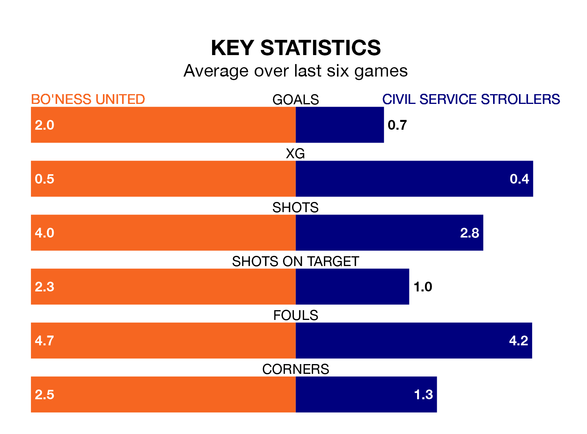

Civil Service Strollers travel to Bo'ness United on Saturday in the Lowland Football League.
The visitors come into the game on the back of a defeat in their last match, having lost to Celtic B 7-0 away.
Bo'ness, meanwhile, won their last match, 5-1 against Gala Fairydean Rovers.
With 55 goals in 28 games so far this season, Bo'ness are scoring more than average in the league with 2.0 goals per game. And they are conceding fewer than average, letting in 38 goals at a rate of 1.4 per game.
Civil Service Strollers, meanwhile, are below average scorers, with 1.4 goals per game, compared to a league average of 1.7. They have conceded 1.3 goals per game.
In the last 10 years, Bo'ness and Civil Service Strollers have played each other on six occasions. Bo'ness won one of them, Civil Service Strollers two, and they drew three times.
On average, Bo'ness scored 0.7 goals and Civil Service Strollers 1.3 in those matches.
Their last meeting was on September 2, when Civil Service Strollers won 2-0 at home.
United are fourth in the table after 28 games, of which they have won 16 and drawn four, earning 52 points.
The away side are five places behind the hosts in ninth, with 12 wins and six draws putting them on 42 points.
Bo'ness are in mixed form in the Lowland Football League, with three wins and a draw from their last six games.
With a win and two draws over that period, Civil Service Strollers's form is worse – they have taken five points from 18, compared to Bo'ness's 10.
Updated: 09:34 (UTC), 08/03/24